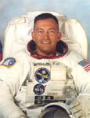

Lyndon B. Johnson Space Center
Houston, Texas 77058
|
National Aeronautics and Space Administration Lyndon B. Johnson Space Center Houston, Texas 77058 |
 |
Biographical Data |
||
Carlos I. Noriega (Lieutenant Colonel, USMC, Ret.)
NASA Astronaut (Former)
PERSONAL DATA: Born October 8, 1959, in Lima, Peru. Considers Santa Clara, California, to be his hometown. Married to the former Wendy L. Thatcher. They have five children. He enjoys flying, running, snow skiing, racquetball and spending time with his children. His parents, Rodolfo and Nora Noriega, reside in Gilbert, Arizona. Her parents, John and Elizabeth Thatcher, reside in Honolulu, Hawaii.
EDUCATION: Graduated from Wilcox High School, Santa Clara, California, in 1977. Bachelor of Science degree in computer science from the University of Southern California, 1981. Master of Science degree in computer science and Master of Science degree in space systems operations from the Naval Postgraduate School, 1990.
SPECIAL HONORS: Defense Superior Service Medal, two Defense Meritorious Service Medals, Air Medal with Combat Distinguishing Device, Air Medal (Strike Flight Award), Navy and Marine Corps Achievement Medal, two NASA Space Flight Medals and the NASA Exceptional Service Medal.
EXPERIENCE: Noriega was a member of the Navy ROTC unit and received his commission in the United States Marine Corps at the University of Southern California in 1981. Following graduation from flight school, he flew CH-46 Sea Knight helicopters with HMM-165 from 1983 to 1985 at Marine Corps Air Station (MCAS) Kaneohe Bay, Hawaii. Noriega made two 6-month shipboard deployments in the West Pacific/Indian Ocean, including operations in support of the Multi-National Peacekeeping Force in Beirut, Lebanon. In 1986, he was transferred to MCAS Tustin, California, where he served as the aviation safety officer and instructor pilot with HMT-301. In 1988, Noriega was selected to attend the Naval Postgraduate School in Monterey, California. Upon graduation in September 1990, he was assigned to United States Space Command in Colorado Springs, Colorado. In addition to serving as a Space Surveillance Center Commander, he was responsible for several software development projects and was ultimately the command representative for the development and integration of the major space and missile warning computer system upgrades for Cheyenne Mountain Air Force Base. At the time of his selection, he was serving on the staff of the First Marine Aircraft Wing in Okinawa, Japan. Noriega retired from the Marine Corps in January 2003.
He has logged approximately 3,000 flight hours in various fixed-wing and rotary-wing aircraft.
NASA EXPERIENCE: Selected by NASA in December 1994, Noriega reported to the Johnson Space Center in March 1995. He completed a year of training and evaluation and was qualified for assignment as a mission specialist in May 1996. He held technical assignments in the Astronaut Office EVA/Robotics and Operations Planning Branches. Noriega flew on STS-84 in 1997 and STS-97 in 2000. He has logged more than 481 hours in space, including over 19 EVA hours in three spacewalks. Following STS 97, Noriega trained as the backup commander for the Sixth Expedition to the International Space Station and later as a member of the crew of STS-121. In July 2004, Noriega was replaced on the crew of STS-121 due to a temporary medical condition. While awaiting future flight assignment, Noriega served as Chief of the Exploration Systems Engineering Division at Johnson Space Center. In January 2005, Noriega retired from the Astronaut Corps. He left NASA in August 2011. Noriega’s final assignment was as the Director of Safety, Reliability and Quality Assurance for the Constellation Program at Johnson Space Center.
SPACEFLIGHT EXPERIENCE: STS-84 (May 15 to May 24, 1997) was NASA’s sixth space shuttle mission to rendezvous and dock with the Russian Space Station, Mir. During this 9-day mission, the crew aboard Space Shuttle Atlantis conducted a number of secondary experiments and transferred nearly 4 tons of supplies and experiment equipment between Atlantis and the Mir station. During STS-84, Noriega logged a total of 221 hours and 20 minutes in space, traveling 3.6 million miles in 144 orbits of the Earth.
STS-97 Endeavour (November 30 to December 11, 2000) was the fifth space shuttle mission dedicated to the assembly of the International Space Station. While docked to the station, the crew installed the first set of U.S. solar arrays and performed three spacewalks totaling 19 hours and 20 minutes in addition to delivering supplies and equipment to the station’s first resident crew. The mission duration was 259 hours and 58 minutes, traveling 4.47 million miles.
AUGUST 2011